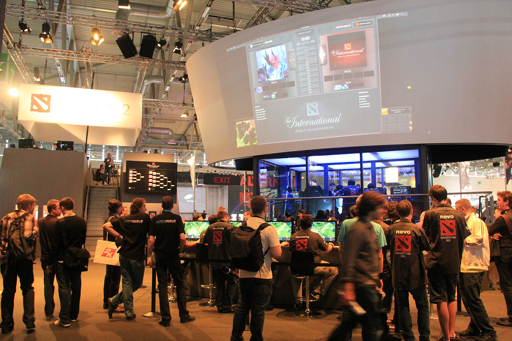
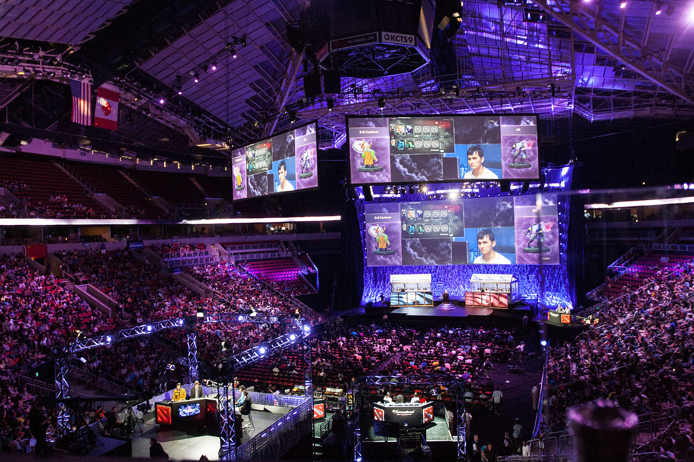
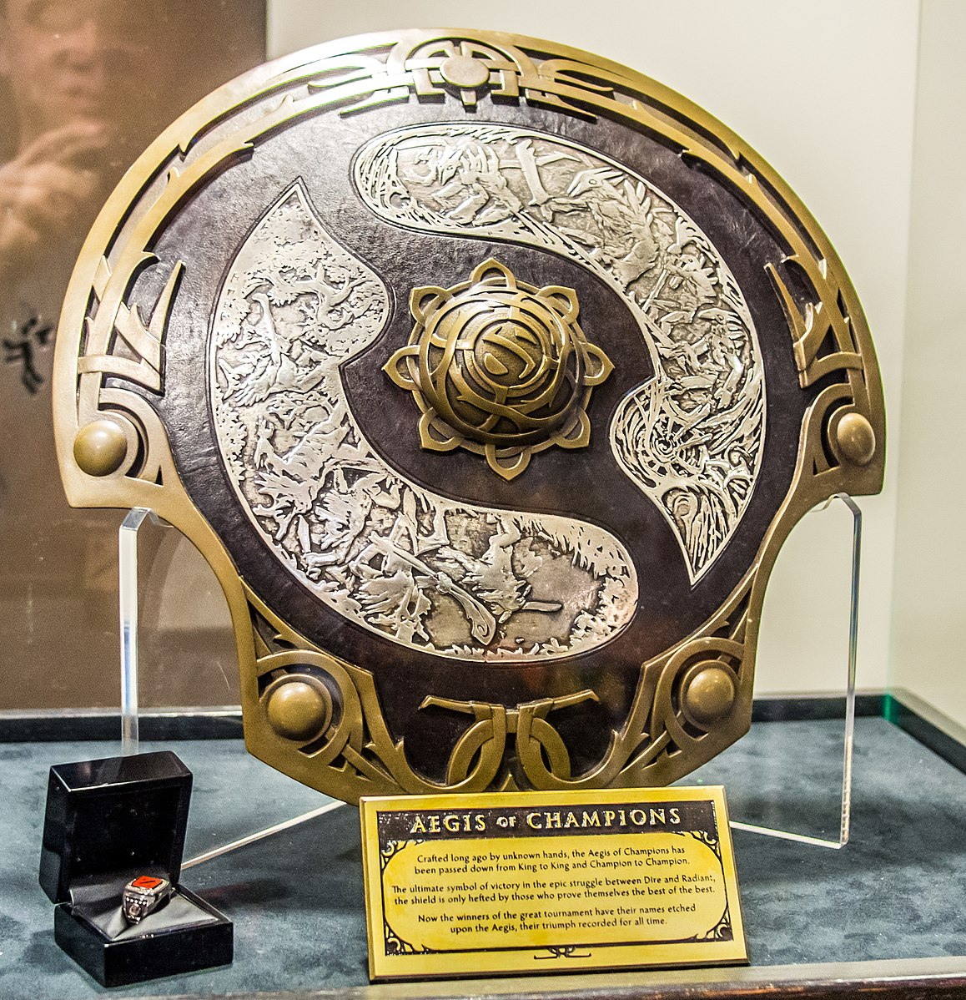
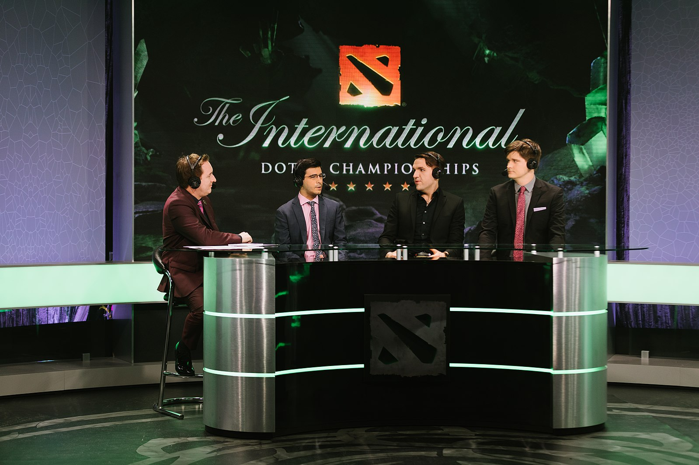

The International (Dota 2)
From Wikipedia, the free encyclopedia| Sport | Dota 2 | |||
| Month Played | August | |||
| Established | 2011 | |||
| Number of tournaments | 10 | |||
| Adminitrator(s) | Valve | |||
| Tournament format(s) | Group Stage | Round Robin | Main Stage | Double Elimination |
| Venue(s) | Varies | |||
| Participants | 16 teams (2011-2016) | 18 teams (2017-present) | ||
| Website | dota2.com/esports | |||
| Current Champion | Team Spirit |
List of Tournaments History Format Media Coverage Documentaries
The International is an annual esports world championship world championship tournament for the video game Dota 2, hosted and produced by the game's developer, Valve. The International was first held at Gamescom as a promotional event for the game in 2011, and has since been held annually with the exception of 2020 due to the COVID-19 pandemic. The tournament consists of 18 teams; 12 based on final results from the Dota Pro Circuit and six more from winning regional playoffs from the North America, South America, Southeast Asia, China, Eastern Europe, and Western Europe regions.
The tournament's prize pool has been crowdfunded via a battle pass system within the game since 2013, with a quarter of all revenue from it directly funding the event. Internationals have the largest single-tournament prize pool of any esport event, with the most recent one reaching US$40 million. The most recent champion is Team Spirit, with OG being the only repeat winner in the tournament's history.
List of Tournaments
| Year | Champion | Total Purse | Date | Venue |
| 2011 | Natus Vincere[1] | $1,600,000 | August 17-21 | Koelnmesse (Cologne)[2] |
| 2012 | Invictus Gaming[3] | $1,600,000 | August 31 – September 2 | Benaroya Hall (Seattle)[4] |
| 2013 | Alliance[5] | $2,874,380 | August 7–11 | Benaroya Hall (Seattle)[4] |
| 2014 | Newbee[6] | $10,923,977 | July 18–21 | KeyArena (Seattle)[7] |
| 2015 | Evil Geniuses[8] | $18,429,613 | August 3–6 | KeyArena (Seattle)[7] |
| 2016 | Wings Gaming[9] | $20,770,460 | August 3–13 | KeyArena (Seattle)[7] |
| 2017 | Team Liquid[10] | $24,787,916 | August 7–12 | KeyArena (Seattle)[7] |
| 2018 | OG[11] | $25,532,177 | August 20–25 | Rogers Arena (Vancouver)[12] |
| 2019 | OG[13] | $34,330,068 | August 20–25 | Mercedes-Benz Arena (Shanghai)[14] |
| 2020 | CANCELLED[3] | August 18–23 | Avicii Arena (Stockholm)[4] | |
| 2021 | Team Spirit[15] | $40,018,195 | October 7–17 | Arena Națională (Bucharest)[16] |
History
Early Years
Valve announced the first edition of The International on August 1, 2011. 16 teams were invited to compete in the tournament, which would also serve as the first public viewing of Dota 2. The tournament was funded by Valve, including the US$1 million USD grand prize, with Nvidia supplying the hardware. It took place at Gamescom in Cologne from August 17–21 the same year. The tournament started with a group stage in which the winners of each of the four groups were entered into a winner's bracket, and the other teams entered the loser's bracket. The rest of the tournament was then played as a double-elimination tournament. The final of this inaugural tournament was between Ukrainian-based Natus Vincere and Chinese-based EHOME, with Natus Vincere winning the series 3–1. EHOME won US$250,000, with the rest of the 14 teams splitting the remaining $350,000.
The International as an recurring annual event was confirmed in May 2012. The International 2012 was held at the 2,500 seat Benaroya Hall in Seattle from August 31 to September 2, with teams situated in glass booths on the main stage. The total prize pool remained at $1.6 million, with $1 million for the winning team. The previous winners, Natus Vincere, were beaten 3-1 by Chinese team Invictus Gaming in the grand finals. In November 2012, Valve released a free documentary on the event that featured interviews with the teams, and following them from the preliminary stages through to the finale.
Crowdfunding
The International 2013 was hosted again at the Benaroya Hall in Seattle from August 7–11. Sixteen teams participated, thirteen of which received direct invitations, and the final three being decided in two qualifying tournaments and a match at the start of the tournament. In May 2013, it was announced that an in-game battle pass, known as the Compendium, would be available for purchase that allowed for the tournament's prize pool to be crowdfunded. A quarter of the total revenue from the Compendium was added to the base $1.6 million prize pool. The prize pool eventually reached over $2.8 million, making it the largest prize pool in esports history at the time. KCPQ news anchor Kaci Aitchison acted as a host at the event, providing behind-the-scenes commentary and player interviews. The International 2013 was viewed by over a million concurrent viewers at its peak, via live streaming websites such as Twitch.
The International 2014 took place from July 18–21 at the KeyArena in Seattle. For the event, eleven teams would receive direct invites, with an additional four spots determined by regional qualifiers taking place between May 12–25. The sixteenth spot would be determined by a wild card qualifier between the runners-up from the regional competitions. The tickets for the event were sold out within an hour of going on sale that April. The tournament's crowdfunded prize pool again broke esport records for being the largest in history, with it totalling over $10.9 million. As a result, eight Dota 2 players became the highest earning players in esports, surpassing the top earning player at the time, Lee "Jaedong" Jae-dong of StarCraft. The event was also broadcast on ESPN networks for the first time.
The tournament was expanded to 18 teams for The International 2017 onwards, an increase from the previous 16. The International 2020 was the first International to skip a year, as it was postponed due to the COVID-19 pandemic. Ahead of the event, originally scheduled to be held in Stockholm, Sweden, the Swedish Sports Federation voted to deny recognition of esports as a sporting event, making it difficult for Valve to help international players to secure travel visas for participating there.[44] Valve later announced they had rescheduled the event, rebranded as The International 2021, to be held at the Arena Națională in Bucharest, Romania, in October 2021.
Format
Invitations
The International features a series of tournaments before the event, known as the Dota Pro Circuit (DPC), with the top 12 ranking teams receiving direct invitations based on their final standings. Besides the directly invited DPC teams, an additional team from the Commonwealth of Independent States (CIS), China, Europe, North America, South America, and Southeast Asia regions each earn an invite by winning regional playoffs, bringing the total number of participating teams up to 18. At the International, two separate best-of-two round robin groups consisting of nine teams each are played, with lowest placed team from both at the end of the stage being eliminated.[51][52][41] The remaining 16 teams then move on to the double elimination main event at the hosted venue, with the top four finishing teams from both groups advancing to the upper bracket, and the bottom four advancing to the lower bracket.[52][51] The first round of the lower bracket is treated as single-elimination, with the loser of each match being immediately eliminated from the tournament.[51][41] Every other round of both brackets is played in a best-of-three series, with the exception being the Grand Finals, which is played between the winners of the upper and lower brackets in a best-of-five series.
Prize Pool
Starting with The International 2013 onward, the tournament's prize pool began to be crowdfunded through a type of in-game battle pass called the "Compendium", which raises money from players buying them to get exclusive in-game virtual goods and other bonuses. 25% of all the revenue made from yearly Compendiums go directly to the prize pool. Each iteration of The International has surpassed the previous one's prize pool, with the most recent one, The International 2021, having one at $40 million (£29 million).
Trophy
The Aegis of Champions is a trophy that is awarded to the champions of an International. The reverse side of it is permanently engraved with the names of each player on the winning team. The Aegis is a shield inspired by Norse and Chinese designs, with it molded in bronze and silver by the prop studio, Weta Workshop. Miniature replicas of it are also sometimes awarded to compendium owners for having a high enough level in it.
Media Coverage
The primary medium for International coverage is through the video game live streaming platform Twitch, which is done by a selection of dedicated esports organizations and personnel who provide on-site commentary, analysis, match predictions, and player interviews surrounding the event in progress, similar to traditional sporting events. Multiple streams are provided in a variety of languages, mainly in English, Russian, and Chinese. The International also sometimes provides a "newcomer stream" that is dedicated to casting and presenting games for viewers who are unfamiliar with the game and its rules.
Documentaries
In 2014, Valve released a free documentary, Free to Play, which followed three players during their time at the first International in 2011. In 2016, Valve began producing an episodic-based documentary series titled True Sight, considered a spiritual successor to Free to Play. Several more episodes of it have been filmed, showcasing the 2017, 2018 and 2019 tournaments.